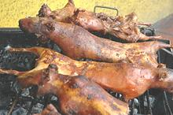

Native to the Andean region of South America (Ecuador, Peru, Bolivia and Colombia), they don't come from Guinea and they aren't pigs, but rodents related to rats and rabbits (order Rodentia, family Caviidae). Guinea pigs have been domesticated for probably 7000 years by tribes in the Andean region and are no longer found in the wild. Andean households routinely breed guinea pigs for consumption, feeding them vegetable scraps, but to most of the world they are cute, docile, easy to care for pets. Photo © i0095
More on Rodents & Rabbits.
Guinea Pigs are moderate size rodents weighing between 1.5 and 2.5 pounds and living from four to five years on average. At one time they were so much used in research and medical testing the term "guinea pig" entered the lexicon as a general phrase meaning a victim of tests and experiments. A few are still used for this purpose but they have mostly been replaced by mice and rats.
Guinea pig has since pre-historic times been a major source of protein in the Andean region where other animals are difficult and expensive to raise. Today Peru alone consumes about 65 million guinea pigs a year. Most are raised by households or small operations, but university researchers in Peru are developing larger breeds to make farming more practical and are hoping to increase consumption outside South America.
Consumption has spread from the Andean region to adjacent parts of South America and cuy is becoming more common in North American cities, particularly New York which has a substantial Ecuadorian community. They are mostly raised and dressed in Ecuador and shipped to the U.S. frozen, but some local farming has begun.
 In North America cuy are often marinated and then spit roasted over low coals for at least an hour, head and all. They may be sectioned before arrangement on the plate, but yes, you still get the head.
In South America they appear in many recipes, fried, broiled, roasted
and in casseroles and fricassees. The meat has a taste similar to rabbit,
which is similar to the dark meat of chicken, but there's not a lot of
meat on a guinea pig and what there is is a bit chewy in texture.
Photo © i0100
There are no particular risks to eating cuy - unless your teenage vegan daughter catches you eating "cute guinea pigs" - she'll probably lecture you to an early grave. High in protein while low in fat and cholesterol, guinea pig is considered a healthy meat.